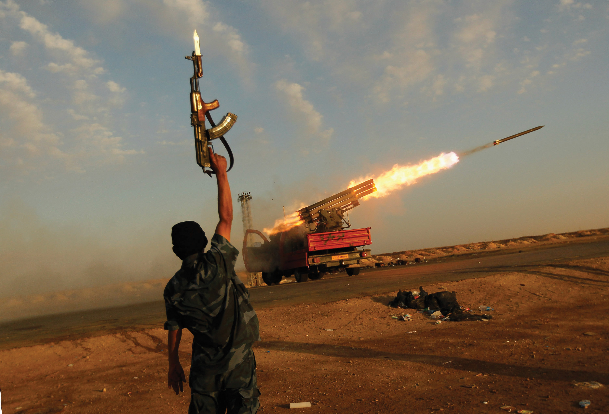

On January 31, 2001, the US Commission on National Security/21st Century released its report warning that foreign terrorists would soon attack and kill many people in the United States.This account and the interviews appear in Stephen Hess and Marvin Kalb, eds., The Media and the War on Terrorism (Washington, DC: Brookings Institution Press, 2003), 113–20. The commission was the brainchild of President Bill Clinton and Speaker of the House Newt Gingrich, mandated by Congress, and chaired by two former senators, Warren Rudman (R-NH), and Gary Hart (D-CO). It spent $10 million and worked for three and a half years. To ensure widespread coverage of the report, its chairmen hired a public relations firm, visited newspapers’ news bureaus in New York and Washington, DC, briefed key members of Congress, and unveiled it at a news conference on Capitol Hill.
The report was not entirely ignored but never received the media attention it warranted. The wire services reported it, as did the Washington Post>, the Los Angeles Times, and CNN. USA Today published a short piece on the report. But there were few stories in the rest of the news media when the commission reported or later. Nothing about it was reported in the New York Times. Most Americans were unaware of the report and of the deadly danger it warned of.
Interviewed a year later, journalists regretted the limited coverage. They attributed it to various factors. One was timing: the press covers only a few major stories at any time and the cut in interest rates and the electricity crisis in California were deemed more newsworthy because of their immediate effects on people. The apparent lack of interest from public officials was another explanation. The news media would have covered the report far more if President Clinton, who had just left office, had promoted it or if his recently inaugurated successor George W. Bush had held a news conference about it or invited the two senators to the White House or had highlighted terrorism in a speech. President Bush did none of these things. Nor did Congress hold a hearing on the report or make terrorism a priority. The report also lacked immediacy: it was a prediction about an event that might happen.
The media failed to connect the report to past events: terrorists had previously staged several attacks against the United States, including destroying two US embassies and damaging the World Trade Center. “In the three months leading up to 9/11, the phrase Al Qaeda was never mentioned on any of the three evening news broadcasts—not once.”Tom Fenton, Bad News (New York: Regan Books, 2005), 4.
This case shows that not reporting or insufficiently reporting stories can be significant. The news media put no pressure on President George W. Bush to take action to try to forestall terrorist attacks. They denied people information and understanding about the terrorist threat and limited their ability to hold the administration accountable for a policy failure when the attacks occurred. After the attacks, they arguably gave excessive and positive coverage to the Bush administration’s responses to terrorists and terrorism.
The Twin Towers
On 9/11 Al Qaeda terrorists armed with simple box cutters took over four passenger planes, transforming them into lethal weapons. They flew two of the jets into the Twin Towers of the World Trade Center in New York City, killing 2,823 people from around the world and injuring many others. They flew the third jet into the Pentagon, causing more casualties and serious damage to the building. Passengers prevented the terrorists from flying the fourth plane to Washington, DC, and the plane crashed in the Pennsylvania countryside. Shown throughout the world, the horrifying shots of the planes flying into the Twin Towers and of the towers’ destroyed remnants are enduring images of a spectacular attack on the symbols of US economic might. They graphically exposed the ability of terrorists from abroad to attack on US soil. They shocked Americans into realizing their country’s vulnerability, with its six thousand miles of land borders and three hundred ports of entry.
Clear Shot of Plane Hitting Tower Two
To a nation accustomed to Hollywood disaster blockbusters, the 9/11 attack was harsh reality.See Anthony Lane, “This Is Not a Movie,” New Yorker, September 24, 2001, 79. Yet the phrases used by television commentators had an eerie familiarity: they recalled Hollywood’s fictional movie The Siege, a 1998 thriller about terrorists attacking targets in New York City.
President Bush and other US government and military leaders responded to the attacks depicted in the devastating images and words of the media. Their themes were American national identity, strength, and power. Their purpose was to unite the American public and mobilize support for a “war on terrorism” to be waged abroad and at home. In their stories, journalists repeated and thereby reinforced these themes and supported the purposes.John Hutcheson, David Domke, Andre Billeaudeaux, and Philip Garland, “U.S. National Identity, Political Elites, and a Patriotic Press Following 9/11,” Political Communication 21, no. 1 (January–March 2004): 27–50.
The United States is the global superpower and world leader. It operates in a world beset by famine, poverty, disease, and catastrophes both natural (tsunamis, earthquakes) and man-made (climate change, pollution of the seas and skies, and release of radioactive materials from nuclear plants). It is a world of genocide, regional and ethnic strife, and refugees. Terrorism, conflicts in Iraq and Afghanistan, the nuclear weapons programs of Iran and North Korea, the proliferation of weapons of mass destruction (“loose nukes”), the Arab-Israeli conflict, and instability and challenges to autocratic rulers in the Middle East are only the most obvious of the foreign policy issues that affect the United States. Others are economic upheavals, the rise of China to world economic and political power, relations with Russia, AIDS in Africa, dependence on oil from undemocratic states, the importation of illegal drugs, and the annual US trade deficit of around $800 billion.
At the same time, the United States is extraordinarily active, often militarily, in international affairs. Since 1989, it has intervened in Panama, Kuwait, Somalia, Bosnia, Haiti, Kosovo, Afghanistan, and Iraq.On the justifications for war since 1990, see Nicholas Kerton-Johnson, Justifying America’s Wars: The Conduct and Practice of US Military Intervention (New York: Routledge, 2010). On the other hand, it stood aside as hundreds of thousands of people were killed in the Rwandan genocide. President Clinton later apologized for doing nothing in Rwanda.
America’s military expenditures are enormous. The annual defense budget is around $711 billion plus more billions for Homeland Security. That’s about ten times greater than any other nation. The United States has around eighty major weapons programs under development with a collective price tag of $1.3 trillion. It has formal or informal agreements to defend thirty-seven countries. It has more than 700 military installations abroad in approximately 130 countries, including South Korea, Germany, and dictatorships such as Uzbekistan. Excluding Iraq and Afghanistan, some 200,000 American military personnel plus a roughly equal number of dependents and civilians are stationed abroad. The United States is the world’s leading supplier of weapons to the rest of the world.
US Department of Defense Budget
View the defense budget at http://comptroller.defense.gov/budget.html.
According to an investigation by the Washington Post, the government responding to the terrorist attacks of 9/11 has created a top-secret America:
This chapter explains why the United States has become so involved in the world, how the government is organized to make foreign and national security policies, and the most important policies that result.
After reading this section, you should be able to answer the following questions:
Foreign policy is made by the president, presidential advisors, and foreign policy bureaucracies.
Formal powers specified in the Constitution put the president at the center of foreign policy. They include being commander in chief of the armed forces, negotiating treaties, and appointing ambassadors. The president is also the spokesperson for and to the nation: notable presidential addresses have been made by Franklin D. Roosevelt after the Japanese attack on Pearl Harbor in 1941 and by George W. Bush following the 9/11 attacks.
How presidents manage the bureaucracy influences the information they receive and their range of policy options.Gary R. Hess, Presidential Decisions for War: Korea, Vietnam, and the Persian Gulf. (Baltimore: Johns Hopkins University Press, 2001). Franklin Roosevelt opted for overlapping jurisdictions, with departments competing for influence and his attention. Other presidents established rules and procedures for processing information and vetting opinions. President Clinton sought out independent-minded advisors and gave them some leeway to decide policy. President George W. Bush relied on a few advisors, particularly Vice President Dick Cheney and Secretary of Defense Donald Rumsfeld.Thomas Preston and Margaret G. Hermann, “Presidential Leadership Style and the Foreign Policy Advisory Process,” in The Domestic Sources of American Foreign Policy, 4th ed., ed. Eugene R. Wittkopf and James M. McCormick (Lanham, MD: Rowman & Littlefield, 2004), 363–80.
Foremost among the president’s foreign policy advisors is the national security advisorLeading advisor to the president on national security and foreign policy.. Issues the advisor faces include how to serve and protect the president’s interests and how to deal with other makers of foreign and defense policy in the government.
Some national security advisors have built a large staff to help them formulate options and oversee policy implementation. They have been vocal in espousing and expressing their views. One of the most powerful and forceful national security advisors was Henry Kissinger, who served President Richard Nixon. He understood the job as requiring him to interact frequently with the media to communicate his and the president’s policy views. He was famously successful in dealing with reporters, especially the three television networks’ correspondents and the influential Washington columnists specializing in foreign affairs. He was able to “disarm them with his wit, intimidate them with his brilliance, flatter them with his confidences and charm them with his attention.”Walter Isaacson, “The Senior Official,” Washington Journalism Review 14, no. 9 (November 1992): 30; see also Walter Isaacson, Kissinger (New York: Simon & Schuster, 1992). His critics were likely to be telephoned, cajoled, stroked, invited to dine, and visited at their homes.
The national security advisor is often in competition with the secretary of state. In the starkest example, President Jimmy Carter’s national security advisor, Zbigniew Brzezinski, clashed frequently with Secretary of State Cyrus Vance. He tried to manage policy in the White House and did not always communicate decisions to other policymakers. Vance resigned in protest over not being informed in advance about the attempt to rescue the American embassy personnel held hostage in Iran in 1980.
Some national security advisors try to be neutral facilitators in policy debates between the heads of the major foreign policy bureaucracies. They are not always successful. President Ronald Reagan’s national security advisors were unable to mediate between the constantly warring Secretary of State George Shultz and Secretary of Defense Casper Weinberger or control Director of Central Intelligence William Casey.
The trend in recent administrations has been to select knowledgeable and low-key individuals who can provide the president with expert advice but not invite or engage in running conflicts with the other foreign policy bureaucracies. Sometimes this turns into catering to the president’s wishes, as Condoleezza Rice did with President George W. Bush’s wish to go to war with Iraq. After his reelection in 2004, he appointed her secretary of state.
Led by the national security advisor, the National Security Council’s Principals Committee consists of the president’s senior security advisors, relevant cabinet members, and military and intelligence advisors. The president’s principal forum for considering national security and foreign policies, it is supposed to ensure consensus on and coordinate the policies among the various government agencies. But it is not easy to avoid internecine warfare among its participants, and discourage (let alone prevent) the secretaries of defense and state and the vice president, as well as special envoys to trouble spots, from communicating to the president unilaterally to influence and make policy.
The State Department is the oldest cabinet-level department. It has primary responsibility for managing the foreign affairs budget and resources, leading and coordinating other US agencies in developing and implementing foreign policy, leading and coordinating US representation abroad, and negotiating with foreign countries.
In none of these areas is its leadership unchallenged. Within the United States, the national security advisor has often eclipsed the secretary of state and the State Department as the principal source of policy ideas. The Defense Department has long been a competitor in national security policy and the US Special Trade Representative provides an alternative source of economic advice for the president. Abroad, the ambassador’s authority in the US embassy is often resisted by personnel assigned to it by other agencies, such as those responsible for spying.
The State Department’s lead position in foreign affairs has also been compromised by congressional reluctance to pass foreign affairs appropriations, restrictions it imposes on how the funds can be spent, and micromanaging of the foreign affairs budget.
Congress also requires the State Department annually to certify countries as meeting targets on human rights, arms control, reducing drug trafficking, and other areas in order to remain eligible for foreign aid. An escape hatch does allow presidents to certify a country for aid if it is in the “national interest” to do so.
For most of its history, the military was organized under separate commands of the War Department and Navy Department. No political or military authority other than the president existed above these departments to coordinate and direct them. This changed after World War II, when the 1947 National Security Act established the cabinet-rank position of the secretary of defense. In 1949, an amendment to the 1947 National Security Act established the Defense Department and the post of chair of the Joint Chiefs of Staff .
Exercising command authority over the military on behalf of the president, the secretary of defense participates in making and executing foreign policy, especially when it requires the use of force. Thus Secretary of Defense Donald Rumsfeld was intimately involved in the decision to attack Iraq in 2002 and was responsible for the execution of the policy.
The chair of the Joint Chiefs of Staff plans and coordinates the deployment of American forces, the unified commands conduct these operations, and the military services train and equip the necessary forces. Since the 1980s, a dominant issue within the Defense Department has been improving the operational efficiency of the armed forces.Eliot A. Cohen, “A Revolution in Warfare,” Foreign Affairs 75 (1996): 37–54; and Thomas G. Mahnken and James R. FitzSimonds, “Revolutionary Ambivalence,” International Security 28 (2003): 112–48. The concern for operational efficiency is joined by a concern for cost. Almost half of the Defense Department’s annual budget goes to salaries and a quarter to operating and maintaining military forces.
The twin concerns for efficiency and cost have been combined in three debates over the ability of the United States to fight wars today. One debate is between defense hawks, who want increased defense spending to ensure US security, and deficit hawks, who wish to reduce all areas of government spending. A second debate is over military readiness. Does the military consist of “hollow forces” that look robust on paper but lack training, modern weapons, and effectiveness? The third debate is over the impact of modern technology on how the United States organizes, prepares for, and fights wars.
All three debates took place over the Iraq War. Deficit hawks reacted with great concern to the Bush administration’s continuously rising price tag for the war and the occupation and reconstruction of Iraq. The second debate was seen in the concerns expressed by National Guard units over the length of time they were serving in Iraq and the refusal of the military to allow many career soldiers to leave, resign, or retire. The debate over the role of technology in warfare was central to the dispute between Secretary of Defense Donald Rumsfeld and many senior military officers over how to conduct the war and how large a military force was necessary.
The Central Intelligence Agency (CIA) was created by the National Security Act of 1947. Its main task was to correlate, evaluate, and disseminate intelligence.John Ranelagh, The Agency: The Rise and Decline of the CIA (New York: Simon & Schuster, 1986); and Arthur S. Hulnick, Fixing the Spy Machine: Preparing American Intelligence for the Twenty-First Century (Westport, CT: Praeger,1999). It was not explicitly authorized to engage in covert action or to collect its own information. Both of these tasks, however, quickly became part of its mission.
The CIA’s directorate for operations engages in covert operations. By the 1970s, the cumulative effect of two decades of covert action and of news stories about them produced a media and thus public image of the CIA as a “rogue elephant” that was out of control. Congress then created two special committees, one in each chamber, to oversee intelligence. It also insisted that covert actions be accompanied by an explicit “Presidential Finding” that the cover actions are in the national interest.
The CIA is one of several intelligence agencies. Others are
They operate independently of the CIA.
After the 9/11 terrorist attacks, the CIA’s intelligence estimating abilities and procedures came into question. Of concern was the absence of clandestine collection capabilities (spies) in many parts of the world that harbor anti-American terrorist movements or possess weapons of mass destruction. Also questioned was the CIA’s lack of cooperation with the FBI and other intelligence agencies. Perhaps most devastating was the finding of the 9/11 Commission that investigated the terrorist attacks: “a failure of imagination” kept the intelligence agencies from anticipating and thwarting the attacks.
The 9/11 Commission
Read the findings of the 9/11 Commission at http://www.9/11commission.gov/.
The Iraq War brought forward new charges of intelligence failures. At issue here was the quality of the intelligence that contributed to the decision to go to war and the failure to find evidence of weapons of mass destruction in Iraq. Their supposed existence and the imminent threat posed by them to the United States had figured heavily in President Bush’s justification to Congress and the American people for the war.
In response to intelligence failures, Congress passed and President Bush signed legislation creating a Director of National Intelligence (DNI) in December 2004; the DNI was to be the president’s chief intelligence advisor, with substantial control over the government’s intelligence budget of approximately $40 billion. The DNI would be the overall leader of fifteen independent and rival agencies. The CIA director now reports to the DNI. In practice, the power of the intelligence job depends on the director’s relationship with the president.
This newest part of the foreign policy bureaucracy was conceived in response to the 9/11 attacks and became effective in November 2002.Glenn P. Hastedt, “Homeland Security,” in Contemporary Cases in U.S. Foreign Policy: From Terrorism to Trade, 2nd ed., ed. Ralph G. Carter (Washington, DC: CQ Press, 2005); Harold Relyea, “Organizing for Homeland Security,” Presidential Studies Quarterly 33 (2003): 602–24.
The Department of Homeland Security combines activities from 22 different federal agencies with a total workforce of 170,000 employees. Agencies incorporated in the department include the Immigration and Naturalization Service (INS), the Secret Service, the Customs Service, the Federal Emergency Management Agency (FEMA), the Transportation Security Administration, the Coast Guard, and the Border Patrol. Some observers are concerned that the combination of foreign policy and domestic missions in the same department limits its effectiveness. That is, the capacities to meet the challenges posed by earthquakes, floods, blackouts, and storms (tasks that are central to FEMA’s mission) have been underdeveloped as more resources and attention are given to fighting terrorism or that the need to respond to these catastrophes will divert attention away from fighting terrorism.
This is the title given to both an agency located within the Executive Office of the President and to the individual who heads the agency.Steven Dryden, Trade Warriors (New York: Oxford University Press, 1995).
Congress created the office in 1962 largely out of frustration with the State Department’s handling of international trade. It felt that the State Department was too concerned with the policy positions of foreign states and was not responsive enough to American business interests. The USTR is responsible for developing and coordinating US international trade policy. This includes all matters that fall within the jurisdiction of the World Trade Organization, which establishes the rules of trade between states.
Foreign and military policies are made and carried out by the executive branch, particularly the president, with the national security advisor, the State Department, the Defense Department, the Department of Homeland Security, and the intelligence agencies. The National Security Act of 1947 and recent bureaucratic reorganization after 9/11 reshaped the structure of foreign policymaking. Parties involved in making foreign policy often disagree over policies, military spending and military goals, and much more.
After reading this section, you should be able to answer the following questions:
The constitutional division of power between the president and Congress is an “invitation to struggle over the privilege of directing U.S. foreign policy.”Louis Henkin, Foreign Affairs and the Constitution (Mineola, NY: Foundation Press, 1972), 131; and Lee Hamilton, A Creative Tension: The Foreign Policy Roles of the President and Congress (Washington DC: Woodrow Wilson Center Press, 2002). This struggle is most likely to take place when different political parties control the presidency and Congress, when powerful members of Congress disagree with the administration’s policies, and when these policies are controversial or unpopular.
The president’s ability on occasion to make decisions and take action quickly gives him more power over foreign policy than Congress, which takes more time. Nonetheless, Congress can be influential by asserting its amending, oversight, and budgetary powers.
By attaching amendments to pieces of legislation, Congress has directed foreign aid funding for specific countries or purposes such as aid for Israel, buying products made in America, and prohibiting money from being spent on family planning programs.Ruth Berins Collier, “Foreign Policy by Reporting Requirements,” Washington Quarterly 11 (1988): 74–84. But amendments are normally limited to relatively minor policies.
Congress can also exercise influence through oversight of the executive branch’s implementation of foreign or military policy.Loch K. Johnson, “The U.S. Congress and the CIA: Monitoring the Dark Side of Government,” Legislative Studies Quarterly 4 (1980): 477–99. During the Vietnam War, the Senate Foreign Relations Committee, chaired by Senator J. W. Fulbright (D-AR), held hearings critical of the administration’s conduct of the war. During the George W. Bush administration, committees in the House and Senate held hearings on the abusive treatment of prisoners by US soldiers at the Abu Ghraib prison in Iraq and what higher-ups in the command knew about them. But hearings usually take place after policies have been implemented or too late to change them significantly.
Congress can also influence foreign policy through its budgetary powers. It can reduce or even refuse to fund programs. But congressional budgetary powers are blunt and not fine-tuned to the particulars of a policy. Cutting off funding is particularly difficult when it makes members vulnerable to accusations (especially in campaign advertisements directed against them by their opponent) of failing to fund the troops, as happened during the Iraq War. Budgetary controls also do little to offset the president’s authority to commit the United States to a course of action by announcing such policy decisions as a war on terrorism.
The struggle between Congress and the president to control American foreign and military policy can also take place over three constitutional powers that the president and Congress share: appointments, treaties, and war.
The president appoints, but the Senate has the constitutional authority to approve the appointment of ambassadors and those charged with running government departments that conduct foreign policy, such as the Departments of State and Defense. This gives the Senate a voice in how these organizations are run. The Senate does readily and routinely confirm most appointees, but this is often because the president, anticipating objections, usually makes unobjectionable appointments.
In addition, presidents often evade the appointment problem by using people whose appointment is not subject to Senate approval as negotiators. These people may be trusted allies of the president or have expertise in the issue being negotiated. In the Reagan administration, National Security Council staffer Lt. Col. Oliver North was the driving force in the ill-fated Iran-Contra deal that would have freed the American hostages in Iran and funded the Contras in Nicaragua through secret weapons sales to Iran.
Oliver North
Read a related interview with Oliver North online at http://www.pbs.org/wgbh/pages/frontline/shows/drugs/special/north.html.
The Constitution states that it is the president who by and with the advice and consent of the Senate negotiates treaties. The approval of two-thirds of the senators voting is required. The Senate does not always consent. The Republican-controlled Senate, for example, rejected the Treaty of Versailles negotiated by Democratic President Woodrow Wilson following the end of World War I. This treaty created the League of Nations, the forerunner to the United Nations, but with the treaty’s rejection the United States did not join. Today, presidents routinely include key members of the Senate on negotiating teams as a means of obtaining advice before and easing consent after a treaty is signed.
The Senate has rejected few treaties outright, but presidents have learned that approval is not assured even when senators are involved or at least consulted in advance.Loch K. Johnson, The Making of International Agreements: Congress Confronts the Executive (New York: New York University Press, 1984). For example, in 1999 the Senate rejected, by a vote of fifty-one to forty-eight, the Comprehensive Nuclear Test Ban Treaty, which would have banned all tests of nuclear weapons.Stephen I. Schwartz, “Outmaneuvered, Out Gunned, and Out of View,” The Bulletin of the Atomic Scientists 56 (January 2000): 24–31. Even without rejecting a treaty, the Senate may modify it by making amendments and thereby undermining a complex international agreement and bringing about a diplomatic or security crisis.
The Senate’s power of advice and consentConstitutional authority of the Senate to approve treaties—approval from two-thirds of the senators voting is required. is somewhat negated by the president’s increased reliance on executive agreements over treaties as a means of entering into agreements with other states.Lawrence W. Margolis, Executive Agreements and Presidential Power in Foreign Policy (New York: Praeger, 1986). Unlike treaties, executive agreementsAgreements that the president enters into with other states; unlike treaties, they do not require the consent of the Senate before becoming law. do not require the consent of the Senate before becoming law. Presidents are free to enter into them at their own discretion and to end them when they see fit. Congress has tried to curb this power but with little effect. In the 1970s, it passed the Case-Zablocki Act that required presidents to inform Congress of any and all executive agreements they entered into.
The Constitution grants Congress the power to declare war and to raise and maintain armed forces. But when does a state of war come into existence? The United States has sent troops into battle over 125 times in its history, yet Congress has declared war only five times: the War of 1812, the Spanish-American War, the Mexican War, World War I, and World War II. No declaration of war preceded the entry of American forces into the Korean War. President Harry Truman all but ignored Congress, basing his use of force on a UN Security Council resolution, an argument that would be used again later in the Persian Gulf War and the Iraq War. Vietnam too was fought without a declaration of war. When the legality of this war was challenged, defenders pointed to the Gulf of Tonkin Resolution, in which Congress authorized the president to take whatever steps he felt necessary to protect and defend American forces in South Vietnam; the war’s defenders also pointed to congressional votes authorizing funds for fighting the war. The argument was that if Congress did not support the war, all it had to do was stop authorizing funds to fight it. Such an action is far easier said than done.
The congressional–presidential struggle over war-making powers came to a head during the Vietnam era and led to Congress passing the War Powers Resolution over President Richard Nixon’s veto. This resolution effectively allows the president ninety days to wage war without congressional approval. No president has recognized the constitutionality of the War Powers Resolution, though none has openly challenged it either. (See Chapter 13 "The Presidency".)See William G. Howell and Jon C. Pevehouse, While Dangers Gather: Congressional Checks on Presidential War Powers (Princeton, NJ: Princeton University Press, 2007).
Influence can be exerted on foreign and national security policy by think tanks, interest groups, and the public through opinion polls and elections.
Think tanks are private research organizations that seek to influence public policy. They have been referred to as “idea brokers” because they help define the issues on the policy agenda and options for addressing them.Donald E. Abelson, Think Tanks and Their Role in U.S. Foreign Policy (New York: St. Martins, 1996).
Foreign policy is an area in which think tanks have become especially active for several reasons. First, it has become much more complex: no longer restricted to national security, foreign policy encompasses trade, finance, human rights, the environment, and cultural issues. Second, the information abilities of the government have been overwhelmed by this expanded foreign policy agenda. Long-range planning and strategic speculation are now commonly produced by think tanks, as is current information on breaking issues. Third, think tanks provide multiple and competing policy recommendations backed up with supporting information.
A wide variety of groups try to influence US foreign policy. There are economic groups such as the Chamber of Commerce and the American Farm Bureau Federation. There are ethnic groups representing Arab, Greek, Turkish, Chinese, Cuban, and Eastern European Americans.Tony Smith, Foreign Attachments: The Power of Ethnic Groups in the Making of American Foreign Policy (Cambridge, MA: Harvard University Press, 2000); and Alexander DeConde, Ethnicity, Race, and American Foreign Policy (Boston: Little Brown. 1992). Ideological and public interest groups seek to influence US foreign policy in such areas as human rights (Amnesty International) and the environment (the Sierra Club).
As documented in Chapter 9 "Interest Groups", foreign governments can also behave as interest groups. After 9/11 and during the Iraq War, Saudi Arabia came under harsh criticism in the United States for its failure to crack down on terrorist groups. Part of the Saudi response was to engage in a large-scale media and lobbying campaign to improve its image and relations with government in the United States.
Interest groups often conflict on an issue. In the debate over creating free trade areas such as the North American Free Trade Agreement (NAFTA), business groups were pitted against labor and environmental groups. In other cases, one interest group seems to dominate a policy area. This has long been the case with the Arab-Israeli conflict, where Jewish-American groups, notably the American-Israeli Public Affairs Committee (AIPAC), have been particularly influential.
Americans have “limited attention and low levels of knowledge about the details of foreign affairs.”Benjamin I. Page with Marshall M. Bouton, The Foreign Policy Disconnect: What Americans Want from Our Leaders but Don’t Get (Chicago: University of Chicago Press, 2006), 226. Nonetheless, they have views about foreign policy. These are influenced by the opinions of trusted elites as communicated, not always accurately, by the media.Matthew A. Baum and Tim J. Groeling, War Stories: The Causes and Consequences of Public Views of War (Princeton, NJ: Princeton University Press, 2010).
More generally, Americans would like their country to pursue national security and international justice through participation in treaties and agreements and collective decision making within international organizations. They would also like the country to combat international terrorism, prevent the spread of nuclear weapons, reduce levels of immigration, and protect Americans’ jobs.
Many of these opinions are neither detailed nor intensely held. The public therefore usually goes along with America’s foreign policies or at least gives policymakers the benefit of the doubt unless the media tell them that things have gone wrong. Nonetheless, the public can sometimes initiate and constrain foreign policy.Andrew Johnstone and Helen Laville, eds., The US Public and American Foreign Policy (New York: Routledge, 2010).
The timing of elections is one way public opinion influences the president’s willingness to undertake foreign policy initiatives and exercise military force. Presidents become increasingly hesitant to take foreign policy risks as elections approach for fear of having their leadership called into question. Even successes can be criticized as being too costly. So deep-seated is this reluctance to act that a common complaint from foreign leaders is that US foreign policymaking grinds to a halt every four years. For a different view, there is the film Wag the Dog (1997), in which a president’s aides invent a war with Albania to distract media and public attention from his involvement in a sex scandal that is about to derail his reelection.
One question that has received considerable attention is the American public’s opinions about the use of military force. The conventional wisdom after Vietnam was that Americans would not support military action if it resulted in significant casualties to US troops. This was called the Vietnam syndromePost-Vietnam assumption by US policymakers that Americans would not support military action if it resulted in significant casualties to US troops..
As a result, any military involvement in the future would have to be short and involve the overwhelming application of force.Bruce W. Jentleson, “The Pretty Prudent Public: Post Vietnam Public Opinion on the Use of Military Force,” International Studies Quarterly 36 (1990): 49–74. The George W. Bush administration’s decision to minimize the number of US forces on the ground in the Iraq War and the heavy use of air power as a prelude to the ground war reflected this syndrome.
The American public’s willingness to tolerate casualties depends on the reasons for military action.Peter D. Feaver and Christopher Gelpi, Choosing Your Battles: American Civil-Military Relations and the Use of Force (Princeton, NJ: Princeton University Press, 2004). People are most supportive of the use of military force when they believe it is to protect the United States against attack. Nonetheless, protracted conflicts lower presidential popularity: witness Korea and President Truman, Vietnam and President Johnson, and Iraq and President George W. Bush.
Congress is involved in foreign and military policies through its amending, oversight, and budgetary powers and through the constitutional power related to appointments, treaties, and war it shares with the president. While Congress has sometimes worked to limit the president’s autonomy in foreign policy, the use of executive orders and the ability to enter military engagements without formal declarations of war have ensured the president’s continued primacy in international affairs. Forces that sometimes influence foreign and military policies from outside government are think tanks, interest groups, and public opinion.
After reading this section, you should be able to answer the following questions:
In this section we move from the makers of US foreign and national security policies to the policies they have made.
Two visions have competed for how the United States should orient itself to world politics. They are isolationism and internationalism. IsolationismBelief that US national interests are best served by avoiding involvement with foreign countries., the policy of trying to stay aloof from foreign entanglements, has long roots in American foreign policy.Selig Adler, The Isolationist Impulse (New York: Praeger, 1957). Many date it back to George Washington’s Farewell Address, which warned Americans to “steer clear of permanent alliances with any portion of the foreign world.”
During the period between World War I and World War II, the United States pursued a largely isolationist foreign policy. It refused to join the League of Nations, and Congress passed a series of bills in the 1930s that imposed a policy of neutrality on the United States in foreign conflicts.
Isolationism ended with US involvement in World War II. It may regain some favor now as Americans react negatively to the financial and human cost of involvement in Iraq and Afghanistan. Media stories about outsourcing, in which American companies give the jobs of their American employees to low-paid workers overseas, may add to the isolationist impulse.
Meanwhile, internationalism reigns. InternationalismBelief that US national interests are best served by involvement with foreign countries. means involvement in events beyond one’s borders to accomplish and protect the national interest.David A. Baldwin, ed., Neorealism and Neoidealism: The Contemporary Debate (New York: Columbia University Press, 1993); and Joseph S. Nye Jr., The Paradox of American Power (New York: Oxford University Press, 2002). It has dominated American foreign policy since 1955, a decade after World War II ended. Internationalists favor democratization, free trade, and a policy of global military activism designed to maintain America’s dominant position in world affairs. But specific policies have varied depending on the administration in power.
We discuss the most important of these policies: containment, deterrence, détente and arms control, and the use of military force by the United States, particularly in Vietnam and Iraq.
The World War II alliance between the United States and the Soviet Union soon gave way to a series of international crises that divided the victors into two opposing blocs. The result was a Cold WarThe rivalry and consequent arms race between the United States and its allies and the Soviet Union and its allies, which lasted from the end of World War II until the late 1980s. of the United States and its allies against the Soviet Union and other Communist countries.
The concept guiding American foreign policy in this global struggle with the Soviet Union and its allies was containmentThe US policy of vigilance and alliances to prevent the spread of Communism..John Lewis Gaddis, Strategies of Containment (New York: Oxford University Press, 1993). It held that the United States did not need to engage in a war to defeat the Soviet Union. Instead it could adopt a policy of constant vigilance and the creation of alliances in which American power would be used to contain and counter Soviet aggressive moves.
Containment Strategy
Read about containment strategy at http://www.nuclearfiles.org/menu/key-issues/nuclear-weapons/history/cold-war/strategy/strategy-containment.htm.
During the Cold War, the news media focused on the conflict between the United States and Communist countries. The main stories were the Communist takeover of China, the Korean War, US relations with Cuba, and the Vietnam War. Thus until the collapse of the Soviet Union in 1991, the US media depicted the world in general and the preceding stories in particular from the American side of the Cold War frame.
Another concept guiding US foreign and military policy during the Cold War was deterrenceThe assumption that US possession of nuclear weapons would hold the Soviet Union in check by threatening it with destruction should it engage in nuclear aggression..Patrick M. Morgan, Deterrence: A Conceptual Analysis (Beverly Hills: Sage, 1977). According to deterrence theory, nuclear weapons were too powerful and destructive to be used as instruments of warfare. They were best suited to holding an opponent (here, the Soviet Union) in check by threatening it with destruction should it engage in an act of nuclear aggression.
Deterrence strategies are designed to prevent an opponent from undertaking an objectionable course of action. It was an article of faith during the Cold War that nuclear deterrence could not be assumed to exist through the possession of a large nuclear arsenal. The United States adopted a second strike strategy: to deter an attack by possessing the capability to absorb an enemy’s nuclear attack and retaliate with so much force that it could inflict an unacceptable level of damage on its society. Stability was assumed to be assured when both sides adopted such a strategy.
Deterrence Strategy
Read about deterrence strategy at http://americanhistory.si.edu/subs/history/timeline/different/nuclear_ deterrence.html.
This created a situation of mutual assured destructionDeterrence by being able to absorb a nuclear attack and have enough nuclear weapons left over to inflict an unacceptable level of damage on the enemy.. Thus a major concern of policymakers in the United States was that the Soviet Union not be allowed to gain a significant advantage over the United States in the size of its nuclear inventory. Because Soviet leaders shared the same goal, the result was an arms race.
As the Cold War expanded in the late 1950s and early 1960s, containment entered the third world. Already the United States had helped bring down anti-American governments in Guatemala and Indonesia. Now newly independent states in Africa and Asia became political and military battlegrounds in which the United States and Soviet Union supported competing local leaders.
The most enduring and significant extension of containment to the third world came in Vietnam.Robert L. Gallucci, Neither Peace nor Honor (Baltimore: Johns Hopkins University Press, 1975); and Leslie H. Gelb with Richard K. Betts, The Irony of Vietnam: The System Worked (Washington, DC: Brookings Institution Press, 1979). The Geneva Peace Accords envisioned a country temporarily divided at the seventeenth parallel with Communist forces in control of North Vietnam and pro-Western forces in control of South Vietnam. But North Vietnam and its Communist allies in South Vietnam began a military campaign to unify all of Vietnam.
When President Dwight Eisenhower left office, the United States had one thousand military advisors in South Vietnam. President John F. Kennedy authorized an additional fifteen thousand advisors. Under President Lyndon Johnson, the war became increasingly Americanized as US forces carried out sustained and massive bombing campaigns against the North and US ground troops began fighting in the South.
A turning point in the war came in late January 1968. Seeking a final, decisive victory, the Communists launched a massive simultaneous attack, known as the Tet Offensive, on major cities throughout the country. In the attack on Saigon, the South Vietnamese capital, soldiers temporarily invaded the American embassy grounds, in full view of American reporters and television news crews.
From a purely military standpoint, Tet was a disaster. Nearly two-thirds of the Communist troops were killed or captured. The expected popular uprising against the Americans and South Vietnamese government did not take place.
Yet by the end of the Tet Offensive, significant segments of the media and thus the American public had turned against the administration’s conduct of the war, if not the war itself. In February 1968, the Wall Street Journal warned readers in an editorial that the effort in Vietnam may be “doomed.” Following a visit to Vietnam, CBS Evening News anchor Walter Cronkite famously declared that “it is increasingly clear to this reporter that the only rational way out will be to negotiate, not as victors, but as an honorable people who lived up to their pledge to defend democracy and did the best they could.” And a special report on NBC television declared the war a failure.Editorial, Wall Street Journal, February 23, 1968, 14; CBS News Special: Report From Vietnam, February 27, 1968; and NBC News Special Report, March 10, 1968.
Even before Tet, media coverage of the war was becoming more critical. The media’s response was driven by a cumulative reaction to the “credibility gap” that had existed for many months between the optimistic statements of the administration and the military command and the experiences of reporters and soldiers in the field. This critical reporting was indexed to growing dissent within the Johnson administration and the Democratic party, evidenced by Minnesota Senator Eugene McCarthy seeking the presidential nomination on an antiwar platform. It was also represented and reinforced by images capturing the brutality and horror of the war.
Figure 17.1

The director of South Vietnam’s national police force executes a bound Viet Cong prisoner.
The photograph and television footage of the execution by the director of South Vietnam’s national police force of a Viet Cong prisoner on the streets of Saigon during the Tet Offensive helped galvanize US opposition to the Vietnam War.
Source: Photo by Eddie Adams, http://www.loc.gov/pictures/item/2009632258/.
A photo of a naked Vietnamese girl and other children fleeing napalm challenged the justification for the US involvement in Vietnam by graphically exposing the cruelty of the war on innocent children. See the legendary image at http://en.wikipedia.org/wiki/File:TrangBang.jpg.
By late March, approval of President Johnson’s “handling of the situation in Vietnam” had dropped to 26 percent and disapproval swelled to 63 percent.Gallup Organization, Vietnam War: A Compilation, 1964–1990. Public Opinion and the Vietnam War: National and International Opinion, vol. II (Princeton, NJ: Gallup, 1992). On March 31, 1968, the president announced he would not run for reelection and that US bombing of North Vietnam would be restricted.
After he took office in 1969, President Richard Nixon pursued a policy of Vietnamization. It was designed to create conditions so that by 1972 the South Vietnamese army would be able to hold its own when supported by US air and sea power. Congress held hearings and cut off some funds. There were demonstrations against the war, especially on college campuses. Nixon’s strategy failed, and in spring 1972 North Vietnam attacked South Vietnam, forcing Nixon to re-Americanize the war. By the time the war finally ended, 55,000 US troops had lost their lives in Vietnam; as many as 541,000 Americans were fighting there at the war’s height, and $150 billion was spent on the war effort.
President Nixon redirected American foreign and national security policy. He sought to minimize future Soviet challenges by treating the Soviet Union less as a rival and more as a partner in the international system. Known as détenteUS policy of cooperating with the Soviet Union within the context of continuing competition and conflict., the goal was to create a framework of limited cooperation between the two superpowers within the context of ongoing competition and conflict.Coral Bell, The Diplomacy of Détente: The Kissinger Era (New York: St. Martin’s, 1977).
Détente’s greatest success was in the area of arms control, most notably with the signing of the SALT I and SALT II agreements, which placed outer limits on the size of the American and Soviet nuclear forces.Thomas C. Schelling and Morton H. Halperin, Strategy and Arms Control (New York: Pergamon-Brassey’s Classic, 1985). These agreements slowed the arms race while maintaining the fundamental symmetry in US and Soviet nuclear forces around which deterrence had been built decades before.
President Jimmy Carter’s foreign policy emphasis on human rights pushed US–Soviet competition into the background.Robert C. Johansen, The National Interest and the Human Interest: An Analysis of U.S. Foreign Policy (Princeton, NJ: Princeton University Press, 1980); Debra Liang-Fenton, ed., Implementing U.S. Human Rights Policy (Washington, DC: United States Institute of Peace Press, 2004). He criticized the human rights abuses of leaders who had loyally stood by the United States in its containment of the Soviet Union. One of those criticized was the shah of Iran. Put into power through a coup engineered by the Central Intelligence Agency (CIA) in 1953, the shah had been one of America’s staunchest Cold War allies. But by the 1970s, he had become increasingly isolated within his own country.Stephen Kinzer, All the Shah’s Men: An American Coup and the Roots of Middle East Terror (New York: John Wiley & Sons, 2002).
In January 1979, a revolution ousted the shah, who was replaced as leader in Iran by the exiled Ayatollah Ruhollah Khomeini. When news broke in October that the shah was coming to the United States for medical treatment, Iranian militants seized the US embassy and held fifty-two Americans hostage. The Carter administration placed economic sanctions on Iran and undertook a failed hostage rescue mission in 1980. The hostages were not released until January 20, 1981, thirty minutes after Ronald Reagan became president.
The media reported the crisis night after night under such titles as “America Held Hostage.”
“America Held Hostage” Logo of ABC’s Nightline
Night after night, the media reminded American policymakers and the public of the continuing hostage situation in Iran and of the inability of the US government to end it.
View the logo at http://pdxretro.com/wp-content/uploads/2011/03/nightline-iran.jpg.
Only a few diplomats were being held hostage, not the entire nation. Nonetheless, the media depiction conveying the impression of American impotence probably precipitated the rescue mission and contributed to making Jimmy Carter a one-term president.
President Reagan rejected the notion that the United States could cooperate or work with the Soviet Union. Under Reagan, détente and arms control ceased guiding American foreign policy.
The deathblow to détente had come during the Carter administration when the Soviet Union invaded Afghanistan in 1979 in order to prop up pro-Russian Communist political forces. Within a year, the Soviet Union occupation army grew to 110,000, and it had to bear the primary responsibility for fighting the guerrillas, or Mujahedin, who were supported by US funds. American military aid to the Mujahedin rose from $120 million in 1984 to $630 million in 1987.
Support for the Mujahedin was consistent with the Reagan Doctrine that the purpose of American foreign policy not only was to contain the spread of Communism but also was to assist in bringing down Communist rulers.James M. Scott, Deciding to Intervene: The Reagan Doctrine and American Foreign Policy (Durham, NC: Duke University Press, 1996).
Most controversial was the administration’s support for anticommunist forces in Nicaragua, where the Sandinistas had overthrown forty years of arbitrary, oppressive, and corrupt family rule in July 1979. The Sandinistas were sympathetic to Cuba’s Castro and hostile to the United States. In November 1981, Reagan authorized spending $19 million to transform a small and largely ineffective fighting force into one (the Contras) that would be more capable of ousting the Sandinista regime. In response, Congress passed the Boland Amendments, which barred the use of CIA or Defense Department funds for the purpose of overthrowing the Nicaraguan government or provoking a military exchange between it and Honduras. Chafing under this restriction, the Reagan administration devised a covert plan for increasing the amount of funds available to the Contras. At the heart of the administration’s plan was a scheme to divert money to the Contras from the covert sale of weapons to Iran. When it became public, the Iran-Contra affair produced widespread and mainly critical negative media coverage and a storm of controversy.
On December 26, 1991, the Soviet Union collapsed. The end of the Cold War brought forward expressions of hope that America’s military involvement in the world might be lessened. For some this meant that a return to isolationism was possible; for others it meant that the United States would be able to engage in building democracy and promoting peaceful change.
These alternative visions of America’s role in the world were soon challenged by the reemergence of traditional national security concerns. The event that sparked this challenge was Iraq’s August 2, 1990, invasion of Kuwait. It led to the Persian Gulf War, the first major international conflict of the post–Cold War era.Michael J. Mazarr, Don M. Snider, and James A. Blackwell Jr., Desert Storm: The Gulf War and What We Learned (Boulder, CO: Westview, 1993).
The UN Security Council set January 15, 1991, as the deadline for Iraq’s peaceful exit from Kuwait and authorized member states to “use all means necessary” to bring about Iraq’s complete and unconditional withdrawal. When Iraq did not withdraw, the United States launched Operation Desert Storm. On February 28, after less than one month of fighting, Iraq announced a cease fire; on April 6, Iraq accepted the UN’s terms to formally end the war. The war was a diplomatic and military success for the United States, which put together a global coalition against Iraq and conducted a military campaign that produced relatively few American casualties.
Before the war, media coverage generally reflected the views of US policymakers and the military; it generated little debate over policy alternatives. The war itself was overwhelmingly reported from the perspectives of US policymakers and the military.W. Lance Bennett and David L. Paletz, eds., Taken By Storm: The Media, Public Opinion, and U.S. Foreign Policy in the Gulf War (Chicago: University of Chicago Press, 1994).
Two visions of foreign policy are isolationism and, dominant since World War II, internationalism. The main policies during the Cold War were containment, deterrence, détente and arms control, and the use of military force, as in Vietnam.
After reading this section, you should be able to answer the following questions:
After the 9/11 terrorist attacks, President George W. Bush focused on a policy of global leadership in a war on terrorism.For criticism of the Bush policy, see John E. Mueller, Overblown: How Politicians and the Terrorism Industry Inflate National Security Threats, and Why We Believe Them (New York: Free Press, 2006); and Louise Richardson, What Terrorists Want: Understanding the Enemy, Containing the Threat (New York: Random House, 2005). Media coverage and depictions would exaggerate terrorism and add to the importance of the war.Brigitte L. Nacos, Mass-Mediated Terrorism: The Central Role of the Media in Terrorism and Counterterror (Lanham, MD: Rowman & Littlefield, 2007).
The first confrontation in this war came in Afghanistan, where Osama bin Laden, the acknowledged mastermind of the 9/11 attacks had taken refuge and where his terrorist organization, Al Qaeda, enjoyed support and protection from the ruling Taliban government.Bob Woodward, Bush at War (New York: Simon & Schuster, 2002).
Figure 17.2 Osama bin Laden

The Saudi Arabian leader of Al Qaeda and mastermind of the 9/11 attacks symbolized terrorism for US policymakers and the media.
Source: Used with permission from AP Photo.
President Bush demanded that the Taliban expel Osama bin Laden and Al Qaeda and sever its ties with international terrorism. When this did not happen, the United States and its allies began aerial strikes against terrorist facilities and Taliban military targets inside Afghanistan on October 7, 2001. Ground forces were supplied largely by the Northern Alliance, a coalition group that had opposed Taliban rule. Its efforts were aided and guided by the Central Intelligence Agency (CIA) and US military forces. The Taliban soon surrendered, but its leader and Osama bin Laden remained at large.
Figure 17.3 The Death of Osama bin Laden

Osama bin Laden would be killed on May 1, 2011, by US Navy Seals in his hideaway in Pakistan. In this photograph, released by the White House and shown around the world, we see the president, Vice President Joe Biden, Secretary of State Hillary Clinton, Secretary of Defense Robert Gates, and other members of the president’s national security team in the Situation Room as cameras mounted on the helmets of the attackers send video footage of the assault narrated from CIA headquarters by Director Leon Panetta.
Source: Photo courtesy of the White House (Pete Souza)http://www.flickr.com/photos/whitehouse/5680724572/.
In covering the war in Afghanistan, the US media reported a consensus among policymakers and the public on the need to defeat the Taliban; the media also focused on military strategy and its execution and paid little attention to the loss of life and destruction caused by the war. As CNN chairman Walter Isaacson wrote in a memo instructing its correspondents not to focus excessively on Afghan suffering, “We must redouble our efforts to make sure we do not seem to be simply reporting from their vantage or perspective.”Alessandra Stanley, “Battling the Scepticism of a Global Audience,” New York Times, November 1, 2001, B4.
Nation-building turned out to be far more difficult than overthrowing the Taliban. Some roads and buildings were rebuilt, and some girls, excluded from education by the Taliban, returned to school. Presidential elections, held in 2004 and 2009, were won by the more or less pro-US Hamid Karzai. There was little “security, stability, prosperity, or the rule of law.”The quote and information in this paragraph come from J. Alexander Thier, “A Chance of Success Slips Away,” New York Times, September 23, 2004, A27. Outside the capital of Kabul, Afghanistan was a collection of fiefdoms run by warlords and an opium-growing economy that fueled lawlessness and funded terrorists. The country’s Supreme Court was controlled by Islamic fundamentalists. Except for the election, Afghanistan was mostly forgotten and ignored by the US news media, whose attention largely turned to Iraq.
President George W. Bush outlined a new direction for American foreign and military policy. Known as the Bush Doctrine, it contained three interrelated themes.John Lewis Gaddis, “A Grand Strategy of Transformation,” Foreign Policy 130 (2002): 50–57.
First, predominance is the necessary foundation of American military strategy. The United States must possess a significant military power advantage over all other states so that it can act unilaterally (alone) to defend its national interests when and where it sees fit.
Second, the strategy for employing military power is preemptionPresident George W. Bush’s policy, exemplified in the war against Iraq, of removing threats before they harm the United States.. Rather than containment and deterrence, the United States will act first to remove threats before they are capable of harming it.
Third, in addition to reducing the military threat posed by other states, preemption has a goal of fostering regime change. Regime change is necessary because hostile states and terrorist organizations, the two principal threats to the United States through their possession of or attempts to possess weapons of mass destruction, are unlikely to change their ways. Only by removing them from power can the threat be eliminated.
Critics pointed out the limitations of preemption as a policy. In theory it should be applied to Iran and North Korea, which are hostile to the United States. But Iran could attack Israel and strike back against US forces in the region; and North Korea could unleash its nuclear weapons and invade South Korea. So under what circumstances and when should the policy be applied?
Given its heavy involvement of military and money in Iraq, moreover, did the United States have the resources to apply a preemption policy to any other countries? The National Guard and Reserve made up approximately 40 percent of US forces in Iraq and Afghanistan. The system is not designed to keep reservists on duty in a campaign against terrorism and fighting abroad for an extended period. Reservists train one weekend a month and two weeks a year, accelerated before deployment; thus many of them are ill prepared and lack combat skills.Ivo H. Daalder, James M. Lindsay, and James B. Steinberg, “The Bush National Security Strategy: An Evaluation,” Policy Brief #109 (Washington, DC: Brookings Institution Press, 2002).
The Bush Doctrine provided the strategic rationale for the Iraq War.Glenn P. Hastedt, Understanding the War in Iraq (Upper Saddle River, NJ: Prentice Hall, 2004); Bob Woodward, Plan of Attack (New York: Simon & Schuster, 2004). The diplomatic maneuvering leading up to war entered into the final phase on March 17, 2003, when President Bush addressed the nation and gave Saddam Hussein forty-eight hours to leave Iraq. Hussein rejected Bush’s ultimatum.
The first blow in the war was struck in the early morning hours of March 20, when President Bush ordered an air strike against the Iraqi leadership. The ground war began early in the evening of the same day, as American and British forces crossed into Iraq from Kuwait. Baghdad fell on April 9. On May 1, aboard the USS Abraham Lincoln, President Bush declared an end to major hostilities. In Iraq, celebrations of peace were short-lived as looting and anarchy soon became the order of the day, followed by insurgency and sectarian conflict. The United States soon went from liberator to occupier.
To build support for the war, the administration had claimed that Iraqi dictator Saddam Hussein was a major threat to the United States because he possessed biological, chemical, and perhaps nuclear weapons of mass destruction and was likely to supply them to terrorists. To make its case, the administration treated unclear or ambiguous information as certain facts (e.g., that Iraq had attempted to obtain uranium from Africa). It ignored intelligence questioning whether Iraq possessed weapons of mass destruction and implied links between Saddam Hussein, 9/11, and terrorists that were never proven. The administration also used inflammatory language (e.g., “We don’t want the smoking gun to be a mushroom cloud” said National Security Advisor Condoleezza Rice).
Before the war, the media transmitted, parroted, promulgated, generally confirmed, and rarely challenged the administration’s scare campaign.Michael Massing, “Now They Tell Us,” New York Review, February 26, 2004, 43–49; also his exchanges with journalists from the New York Times, March 25, 2004, 45–46, and the Washington Post, April 8, 2004, 74–77; and Massing’s “Unfit to Print?,” New York Review, May 27, 2004, 6–10. For a strong dissent, arguing that media coverage of his speeches was biased against President Bush, see Jim A. Kuypers, Bush’s War: Media Bias and Justifications for War in a Terrorism Age (Lanham, MD: Rowman & Littlefield, 2006). The television networks’ coverage of domestic dissent was minimal, although they did report opposition from countries such as France arguing for a diplomatic solution.Danny Hayes and Matt Guardino, “Whose Views Made the News? Coverage and the March to War in Iraq,” Political Communication 27 (2010): 59–87.
The New York Times in particular supported the administration’s rationale for going to war with Iraq by accepting US government sources and Iraqi exiles’ claims at face value, displaying them on the front page under heavy-breathing headlines. The Times gave glowing coverage to Secretary of State Colin Powell’s speech and presentation of February 5, 2003, to the United Nations supposedly documenting Iraq’s weapons of mass destruction.
The Times undermined the credibility of Iraqi government denials by following them with challenges from US officials, and it discredited US and foreign sources critical of the administration’s argument. Stories challenging the administration’s case for war were downplayed: James Risen’s “C.I.A. Aides Feel Pressure in Preparing Iraqi Reports,” completed several days prior to the invasion, was not printed until three days after the start of the war and was then relegated to page B10.Daniel Okrent, “Weapons of Mass Destruction? Or Mass Distraction?,” New York Times, May 30, 2004, sec. 4, p. 2. Dissenters received little coverage.
Because the Times has a reputation for occasional skepticism about people in authority, its coverage gave credibility to the administration’s arguments. Moreover, many news organization, such as CNN and National Public Radio, follow the Times’ lead.
The lack of vigorous challenges by leaders of the Democratic Party to the Bush administration in the run-up to the war left little criticism of the Bush policy for the news media to transmit. But the Times’ coverage contributed to the Democrats’ docility. If the Times had published more critical stories, some Democrats could have been emboldened to attack the war policy.
The Iraq War
Media coverage of the war itself was dramatically different depending on whether one was exposed to US or Arab media.This is based on Rami G. Khouri, “For the Full Story, Watch US & Arab TV,” Pacific News Service, March 26, 2003; James Poniewozik, “What You See vs. What They See,” Time, April 7, 2003, 68–69; and Jacqueline E. Sharkey, “The Television War,” American Journalism Review 25 (May 2003): 18.
In general, the US media supported the war, presenting it as “America against the enemy,” or as “us versus them.” Complexities were ignored: there were no in-depth stories on the history of Iraq, its factions (Kurds, Shiite, and Sunni Muslims); no understanding that, despite their hatred of Saddam Hussein, many Iraqis would not welcome the United States.
Television was most enthusiastic. Morning shows depicted the attack on Iraq as right and proper. Cable stations were unabashedly patriotic: Fox News titled its coverage “Op. Iraqi Freedom: War on Terror.” American flags were part of on-screen logos and backdrops. Many of the expert commentators were former high-ranking officers in the US military who were enthusiastically or at least guardedly prowar.
American reporters embedded with the invasion forces gave the troops’ perspective to their American audience. Reporters framed the conflict the same way as US officials and military commanders.
The war shown on American television networks and on cable was almost entirely bloodless. It featured the “video game” aspects of the technical wizardry of American military power.Sean Aday, “The Real World Will Never Get on Television: An Analysis of Casualty Imagery in American Television Coverage of the Iraq War,” in Media and Conflict in the 21st Century, ed Philip Seib (New York: Palgrave Macmillan, 2005), 141–56. There was a dearth of gruesome or grisly footage. Reports repeated the Pentagon’s sanitized language: “degraded” for slaughtered Iraqi units, “softening up” for the exploding of Iraqi soldiers in their bunkers.
In dramatic contrast was the depiction of the war by Al Jazeera, the Qatar-based satellite television channel, dominated by Arab nationalists and Islamists, transmitting to a daily audience of thirty-five million across the Arab world. (The channel is barely seen in the United States.) It showed a different version of the war with different subjects and frames.
Al Jazeera had access to the Iraqi leadership. It placed correspondents and cameras in the Iraqi cities under attack and reported from the inhabitants’ perspectives. Its staff gave an Arab point of view to an Arab audience.
Al Jazeera did not ignore the American side. It reported the allied advances, had a reporter embedded with US forces, and broadcast sound bites from President Bush. But it debated rather than interviewed American spokespersons. It featured critics of the United States, took Iraqi government statements at face value, and highlighted any setbacks of the coalition forces.
Al Jazeera barely mentioned that the United States was opposing a brutal dictatorship. It depicted the US military as an invading, occupying force of ruthless killers. It broadcast a report from Iraqi television of pictures of dead US soldiers and interviews with captured ones. It showed raw and graphic footage of the destruction inflicted on Iraq and the pain and suffering of its civilians: charred bodies, mourning families, hospitals choked with bleeding and burned civilians.
President Bush announced victory, but Iraq remained a country with ethnic and tribal divisions and religious fanatics following the dictates of clerics. Conflict continued, with insurgents attacking and killing US troops, Iraqi police, and public officials. Weapons of mass destruction were not found. The condition of the country’s infrastructure was dire. Many more billions of dollars were needed to pay for the war and reconstruction and to keep US troops in Iraq.
Elite consensus over the war evaporated. The revitalized Democratic opposition was reflected in Vermont Governor Howard Dean’s campaign for the party’s 2004 presidential nomination. He called the war precipitous and poorly prepared. The 9/11 Commission found that Iraq had no collaborative relationship with Al Qaeda and no involvement in the attacks on the World Trade Center. The former head of counterterrorism at the National Security Council contended that before the attacks, the Bush White House did not treat the danger of Osama bin Laden and Al Qaeda as urgent. He confirmed that the possibility of attacking Iraq was on the administration’s policy agenda before 9/11.Richard A. Clarke, Against All Enemies: Inside America’s War on Terror (New York: Free Press, 2004); for a more sympathetic view of President Bush, see Bob Woodward, Bush at War (New York: Simon & Schuster, 2002).
Media coverage of Iraq turned critical. There were frequent reports of bombings, suicide attacks, and stories of people kidnapped and beheaded. There was a media feeding frenzy of revelations about and photographs of torture by US personnel and private contractors in the Abu Ghraib prison in Iraq and in Afghanistan.Seymour M. Hersh, Chain of Command: The Road from 9/11 to Abu Ghraib (New York: HarperCollins, 2004).
Figure 17.4 Abu Ghraib Prisoner “Gilligan” Hooded, Caped, and Wired on His Box
Photographs such as this, shown around the world, undermined the US claim to be a liberator not an occupier of Iraq.
The Bush Doctrine was three-pronged: it featured predominance, preemption, and regime change as the pillars of US foreign policy. The US therefore conducted military operations in Afghanistan in response to the 9/11 attacks. President George W. Bush’s doctrine of preemption then involved the United States in a war to overthrow the ruling regime in Iraq. While the media initially gave favorable coverage to the decision to go to war and to the military operations in Iraq, subsequent revelations about errors made both before and during the war brought about media criticism of the administration’s decision to go to war and its conduct of the war.
After reading this section, you should be able to answer the following questions:
This brings us to the present day. We start with the foreign and national security policies of the Obama administration.
President Barack Obama faced situations left by his predecessor—notably the wars in Afghanistan and Iraq, the Arab-Israeli conflict, and the global economic crisis. Obama also inherited persistent problems, such as the proliferation of nuclear weapons, their possession by North Korea, and their development by Iran. These issues were further complicated by unexpected challenges, as in the explosion of popular outrage against some of the autocratic rulers of the Middle Eastern states—states replete with corruption, unemployment, and inequality—of Bahrain, Egypt, Libya, Syria, Tunisia, and Yemen. (For a parody of how US policies differ toward each state, depending on US interests, see “John Oliver, America’s Freedom Package,” The Daily Show with Jon Stewart, March 21, 2011, http://www.thedailyshow.com/watch/mon-march-21-2011/america-s-freedom-packages.)
As with all his predecessors, the national interest was the essential criterion he would apply in deciding US foreign and national security policies. A state’s national interest does not necessarily change when a new president takes office. But what might that national interest be? How much flexibility would the president and his administration have (or display) to redefine it? To what extent would the Obama administration, especially the president and Secretary of State Hillary Rodham Clinton, continue, change, or even repudiate some of the Bush policies?
In May 2010, the White House released a white paper detailing the Obama administration’s National Security Strategy. It endorsed engagement, cooperation, and coordination with other states. It rejected the unilateralism, the go it alone policy, of the Bush administration. It committed to exhausting other options before war whenever possible. It identified the proliferation of weapons of mass destruction as the gravest danger facing the country.
So the Obama administration’s foreign and national security policies are not identical with his predecessor’s. They are less bellicose and unilateral, more diplomatic and multilateral. Examples are the pursuit of the nonproliferation of nuclear weapons, an arms control agreement with Russia resulting in a substantial reduction in the countries’ nuclear weapons, and reengagement with the United Nations. The president does not speak about “spreading democracy around the world” and has expressed a willingness to talk directly with Iran and other countries with which the United States has disagreements.
But in practice, the Obama administration’s changes have been more in tone and language, less so in substance.Peter Baker, “On Foreign Policy, Obama Shifts, but Only a Bit,” New York Times, April 17, 2009, A1ff. It has continued the war on terrorism against Al Qaeda and its allies (although without torture), expanding the use of drones against them in Pakistan’s tribal areas. (Arguably, these attacks are targeted assassinations). The administration has continued to give billions of dollars to Pakistan to combat terrorism despite questions about their effectiveness and effects.Lawrence Wright, “The Double Game,” New Yorker, May 16, 2011, 91–94.
President Obama did remove US combat brigades from Iraq by August 2010 and promised that all US troops would be out by the end of 2011; but personnel were likely to remain in the country after that time to help ensure its stability and favorable relations with the United States. He increased the number of US troops in Afghanistan by thirty thousand, doubling the overall American deployment (President Bush had begun a more modest buildup), but announced that the troops would start being withdrawn in July 2011. He sought to avoid getting the United States bogged down in a conflict quagmire as it had in Vietnam, thinking that he would otherwise lose a lot of support in his party.Bob Woodward, Obama’s Wars (New York: Simon & Schuster, 2010).
Nor did the Obama administration’s changes necessarily produce significant successes. Stalemates continued in the peace negotiations it brokered between Israel and the Palestinians and in relations with Iran and North Korea. Little progress was made on preventing, let alone reducing, the effects of climate change.
In March 2011, President Obama ventured into uncharted territory by intervening militarily in Libya. His announced purpose was humanitarian: to prevent the dictator Muammar Gaddafi from massacring the Libyans rebelling against his regime. The intervention, taken over by the North Atlantic Treaty Organization (NATO), of which the United States is the most important power, involved missile strikes against Gaddafi’s forces, then the imposition of a no-fly zone.
Its ultimate intention, indicated by the bombing of Gaddafi’s compound and by the president’s later statements, was regime change—that is, to force Gaddafi to give up his rule. Given his superior firepower and the rebels’ disorganization and lack of weapons, it was not clear that Gaddafi would depart voluntarily without further pressure from the United States and its allies or what any successor regime might be.
Libya, Afghanistan, Iraq, 9/11, and the other cases we have discussed show the ability of the executive branch to impose its preferred frames on international crises. Four factors are involved.This discussion is based on Jon Western, Selling Intervention and War: The President, the Media, and the American Public (Baltimore: Johns Hopkins University Press, 2005), 224.
First, the executive branch has an enormous advantage in the early collection and analysis of information, especially when crisis erupts on short notice. Second, when they are united and their campaign is coordinated, the president and his senior advisors can dominate the rhetoric and speeches about the crisis. The alternatives are leaks and breakdowns in message cohesion. Third, the administration can manipulate intelligence reports favoring its views and discount ones that contradict or weaken them. Fourth, if the crisis is brief, opponents lack the time and opportunity to mobilize public opinion. But if the crisis lingers, they can obtain their own information and undermine the administration’s initial framing.
As explained in Chapter 1 "Communication in the Information Age", the news media usually index story frames to the range of viewpoints—the agreement and disagreement—among high-ranking US officials.W. Lance Bennett, Regina G. Lawrence, and Steven Livingston, “None Dare Call It Torture: Indexing and the Limits of Press Independence in the Abu Ghraib Scandal,” Journal of Communication 56 (2006): 467–85; for a different approach, see Robert M. Entman, Projections of Power: Framing News, Public Opinion, and U.S. Foreign Policy (Chicago: University of Chicago Press, 2004). As time goes on, however, they may collect and disseminate information critical of the administration’s frame and expose any disconnect between official claims and the reality on the ground. This assumes they have access to the events, resources to cover, and the expertise to understand them.
US foreign and national security policies are made and largely articulated in the United States. Policymakers and members of the media interact in Washington and in related places such as the United Nations in New York City.
But the effects of US foreign and national security policies take place and so must be reported from abroad. Aside from the New York Times, most US newspapers, magazines, and television networks and stations have few foreign bureaus with correspondents. Some television news operations (e.g., ABC, CBS, NBC, and CNN) send reporters (known as “one-man bands”) equipped with computers and cameras to report from foreign locations, thereby gathering the news while avoiding the costs of bureaus. For foreign news, the bulk of US news media rely primarily on the wire services such as the Associated Press and, for visuals, on Associated Press Television News (APTN) and Reuters Television.
For US news organizations with reporters abroad, London is the central location: it is the source of around 25 percent of all bureau-based reporting. Bureaus, or half-bureaus with no permanently stationed correspondent, are established at other locations for several reasons: in Moscow, Beijing, and Tokyo because of their important relations with the United States; in jumping-off points such as Johannesburg, South Africa, for covering the rest of the region; and in Jerusalem to cover the continuing story of the Arab–Israeli conflict. Roughly a quarter of foreign correspondents are stringers or freelancers—more or less knowledgeable locals. Most of them receive low pay, no benefits, and have a precarious relationship with their employers.Stephen Hess, International News & Foreign Correspondents (Washington, DC: Brookings Institution Press, 1996).
Around 50 percent of television’s foreign coverage portrays violence.William A. Hachten and James F. Scotton, The World News Prism: Global Information in a Satellite Age, 7th ed. (Malden, MA: Blackwell, 2007), 9. Man-made and natural disasters—with their villains, victims, and heroes—are also news.Robert I. Rotbeg and Thomas G. Weiss, eds., From Massacres to Genocide (Washington, DC: Brookings Institution Press, 1996). These often occur where news bureaus are not located. For example, the main news in late December 2004 and on into 2005 concerned the horrifying death of at least 150,000 people and the destruction at the shorelines of several Asian countries caused by the tsunami waves that resulted from underwater earthquakes in the Indian Ocean.
Figure 17.5 Devastation Caused by the Tsunami of Late December 2004

Because the US news media do not have bureaus in most countries, they must dispatch reporters to cover disasters such as the tsunami waves that wreaked death and destruction on the countries bordering the Indian Ocean.
Source: Photo by Michael L. Bak, http://commons.wikimedia.org/wiki/File:Bodies_in_Banda_Aceh_after_2004_tsunami_DD-SD-06-07373.JPEG.
To cover stories from such “hot spots,” reporters often have to parachute (not literally) in from their bases. They spend time on logistics, getting from place to place, booking hotel rooms, and hiring drivers and translators.Ulf Hannerz, Foreign News: Exploring the World of Foreign Correspondents (Chicago: University of Chicago Press, 2004), 44. Because they lack knowledge of local conditions and don’t stay long, they tend to rely on a few sources, mainly the US embassy, aid workers, and spokespersons from the government of the country.
Wars and conflicts involving the United States (e.g., the Iraq War) are the exception: they are covered extensively by journalists assigned there. But even in Iraq, most reporters for the US news media had little knowledge of the region’s history, Islamic fundamentalism, the resurgence of Arab nationalism, or, indeed, of Iraq. Nor did they speak or read Arabic, which limited their ability to obtain information from native sources.
Accurate and comprehensive or not, news from overseas can be transmitted instantly to twenty-four-hour cable channels and thus to American policymakers and the public. This is facilitated by the combination of new communications technologies and global media systems. Satellite telephones, digital cameras, videophones, laptops with uplink capacities, computers, and blogs from people on the scenes provided vivid images and descriptions of events as instant news for the media to transmit and for people to access on the Internet.
The Defense Department interacts with the media to produce highly positive depictions in two ways. One is through the Hollywood films that “depict and glorify the heroic exploits of US military power.”Carl Boggs and Tom Pollard, The Hollywood War Machine: U.S. Militarism and Popular Culture (Boulder, CO: Paradigm Publishers, 2007), ix.
The second way the Pentagon generates positive coverage of an administration’s national security policies is through the special briefings it provides to the retired officers who appear thousands of times on television and radio as “military analysts.”This paragraph is based on David Barstow, “Message Machine: Behind TV Analysts, Pentagon’ Hidden Hand,” New York Times, April 28, 2008, A1ff. Many of them have ideological agreements with and allegiance to the Pentagon. They also have financial ties, as lobbyists for, senior executive or board members of, or consultant to military contractors who benefit from the policies the “analysts” assess. It is in their interests to maintain their access to and stay on the Pentagon’s right side. Consequently, many of them repeat administration talking points on the air. The largest group was affiliated with Fox News, then NBC and CNN. The Pentagon paid a private contractor to search databases and track all the analysts’ comments.
Positive portrayals of the military by the media may be unusual. The view of Civil War Union General William Tecumseh Sherman may be more typical: upon hearing that the Confederate army had shot two reporters, he remarked, “Great. Now we’ll have the news from Hell by noon.”
This suggests the perennial conflict between the military and the media. From the military perspective, reporters should be “part of the team.” For most correspondents, their coverage can only be restrained if it would jeopardize an operation or the lives of troops. Traditionally, however, the military has denies them access, limits their reporting to official sources, engages in obfuscation and delay, and censors their stories.
So it may seem surprising that the military allowed some six hundred reporters to be embeddedThe Defense Department’s innovation of placing reporters with military units during the Iraq War. with the US troops during the war in Iraq. Secretary of Defense Donald Rumsfeld and Assistant Defense Secretary for Public Affairs Victoria Clarke pushed the decision through. It turned out to be very shrewd. Reporters were co-opted by the troops with whom they were embedded. They reported from the perspective of the US forces winning the war. And they were kept away from places the Pentagon did not want them to be.
Reporters who were not embedded had a tough time getting into and around Iraq and obtaining cooperation from the US military. Many of them were located at US Central Command forward headquarters in Doha, Qatar, where at press conferences generals summarized the success of military operations on a high-tech set designed by a show-business professional at an estimated cost of $250,000.
Reporting from war zones abroad is dangerous. Journalists live and work under constant threat of kidnapping and murder. Many have been killed, many more wounded. As one horrifying example, in April 2011, photojournalists Tim Hetherington (see Diary and Restrepo in Section 17.7 "Recommended Viewing") and Chris Hondros were killed by a grenade in Libya.
Figure 17.6
The dangers of reporting conflicts in the death of photojournalist Chris Hondros, who was killed by a grenade in Libya not long after taking this photo of a rebel fighter in Misurata.
Photo by Chris Hondros of a Rebel Fighter in Misurata, Libya, from Front Page of the New York Times April 21, 2011, Getty Images.
American policymakers wage the battle for public opinion abroad with public diplomacyUS policymakers’ efforts to gain the approval and support of policymakers in foreign countries. aimed at policymakers and the public in foreign countries. Over the years, a bevy of organizations has existed. They include the International Broadcasting Bureau, the Voice of America (VOA), Worldnet television service, Radio and TV Marti, Radio Free Europe/Radio Liberty, and Radio Free Asia.
During and after the Iraq War, the State Department’s Office of Public Diplomacy and Public Affairs promoted what it called “Brand America” to the Islamic world, especially to young people who have reservations about US policy but also admire elements of American life and culture.
These efforts were unsuccessful. Voice of America broadcast Radio Sawa (Radio Together), which offered rock and pop and some news framed from the US perspective. People listened to the music but turned to regional media for the news. The US-sponsored Al Hurra (the Free One), a satellite television station that broadcast a mix of news and pop culture. It was derided in the Arab press as “Fox News in Arabic.” The public diplomacy campaign also featured testimonial advertisements from Muslims living in America describing it as a tolerant, multicultural society with religious freedom. But most major Arab networks refused or demanded too high a price to air them. Finally, American spokespersons and high-ranking officials such as Secretary of State Colin Powell and National Security Advisor Condoleezza Rice gave interviews to Arab media. But the channel showing Rice’s interview on October 2001 preceded it by repeatedly playing pro-Israel statements she had made so that she was discredited even before the interview was aired.
A wealth of information about international affairs is available on the Internet from domestic and foreign media: television clips, radio interviews, and reports and stories in newspapers and magazines. People interested can obtain information about policymakers from around the world and the contents and effects of their foreign and national security policies.
Camcorders, cell phones, and satellite phones are used to gather and report the news. The first video and photos of the tsunami and its dire destruction of late 2004 came from the camcorders of tourists caught in the deluge. The destruction and horror of terrorists’ attacks on the London subway on July 7, 2005 (known commonly as 7/7), was reported first by people trapped underground.William A. Hachten and James F. Scotton, The World News Prism: Global Information in a Satellite Age, 7th ed. (Malden, MA: Blackwell, 2007), 47.
As we discussed in Chapter 1 "Communication in the Information Age", WikiLeaks was founded by Julian Assange to achieve transparency in government activities by exposing official secrets. In 2010, it released to selected news organizations about 90,000 documents prepared by the US military about the wars in Iraq and Afghanistan; then later in the year, WikiLeaks released a trove of around 260,000 US diplomatic cables. The cables show that candor exists behind closed doors: they reveal confidential conversations, accounts of meetings, and appraisals of foreign leaders.
The New York Times, which received the reports directly from WikiLeaks and the cables from the United Kingdom’s Guardian newspaper, published articles detailing and interpreting the leaked documents.For example, Scott Shane and Andrew W. Lehren, “Leaked Cables Offer a Raw Look Inside U.S. Diplomacy: Dispatches Chronicle Threats and Tensions,” New York Times, November 29, 2010, A1ff. It also put selected items online, as did WikiLeaks, with redactions to remove the names of the diplomats’ confidential sources.
Some of the material consists of low-level gossip. But there are revelations, such as the following:
There have been repercussions. The US ambassador to Mexico resigned as a result of information released. Ecuador expelled the US ambassador, who in a cable had referred to high-level police corruption that the country’s president possibly knew about. The US government identified security gaps and further limited the availability of classified information. Pfc. Bradley Manning, the army intelligence analyst who had downloaded the documents from a military computer system and given them to WikiLeaks, was incarcerated in solitary confinement for several months before trial. Meanwhile, it was revealed that WikiLeaks had fragile finances and management problems and its founder had legal difficulties.
Osama bin Laden’s associates in their compound watched Hollywood movies, including The Siege (see Section 17.7 "Recommended Viewing") as they devised and refined the plot that would result in 9/11.Lawrence Wright, The Looming Tower: Al-Qaeda and the Road to 9/11 (New York: Knopf, 2006). But their use of new technology is far more advanced than that. They use it to collect information about targets such as ports, airports, and nuclear power plants and to communicate about, plan, and coordinate attacks. They circulated a manual prepared by Al Qaeda, nicknamed “The Encyclopedia of Jihad,” that detailed how to establish an underground organization and engage in attacks.
There are more than four thousand terrorist websites in different languages. They change their addresses to avoid being hacked by intelligence agencies and freelance vigilantes but still retain much of their content. These sites free the terrorists from dependence on the media for coverage and framing of their deeds. They are aimed at current and potential supporters, governments they oppose, and worldwide public opinion. They are used to raise funds, recruit terrorists, and mobilize support; they are also used to express the terrorists’ views and objectives, threaten their enemies, and show videos of their actions.
Through their video unit, the terrorists send video messages to receptive broadcasters like Al Jazeera, messages that are reported and rebroadcast by media outlets throughout the world. These videos are carefully staged: the backdrop is designed, weapons pointed, and the shot framed. When kidnapped victims are shown, their statements are scripted as they plead for their lives before sometimes being decapitated on camera. Western media do not show the horror, but the videos are sold in Iraq and throughout the world.
The media can undermine US foreign and national security policies. By depicting the Tet Offensive as successful, the media made it difficult for President Johnson to send more troops to Vietnam and encouraged the eventual withdrawal of US forces. The nightly stories about US embassy personnel captive in Iran, often under the heading “America Held Hostage,” probably provoked President Carter into allowing a risky rescue effort that turned into a debacle.
Media depictions of events abroad can encourage or compel US policymakers to take action by sending aid personnel, even troops. This is called the CNN EffectMedia depictions of events abroad that encourage or compel US policymakers to intervene by sending aid or even troops..Eytan Gilboa, “The CNN Effect: The Search for a Communication Theory of International Relations,” Political Communication 22, no. 1 (January–March 2005). It occurs under two conditions. The first condition is when policymakers have not decided or are uncertain about what to do or their policy preferences are contested by other policymakers. The second condition is when the media’s news frames and commentary are critical of the government’s actions or inaction, and the coverage empathizes with the victims. Thus policy uncertainty combined with negative news (e.g., coverage of slaughter and starvation) increase the likelihood of US intervention in humanitarian crises abroad.Piers Robinson, The CNN Effect: The Myth of News, Foreign Policy and Intervention (New York: Routledge, 2002).
Media coverage, however, often comes after—not before—the government’s decision to take action. Thus news coverage of the humanitarian crises in Somalia was a response to the first President Bush’s decision to deploy ground troops. Then news stories supported the decision by framing the famine there as a desperate crisis in which the United States had an obligation to intervene. Later news coverage, however, did affect policy. Reports of the killing of eighteen US Army Rangers and the showing of the body of one of them being dragged through the country’s capital of Mogadishu, resulted in the Clinton administration’s decision to withdraw US troops.
Media coverage or lack of coverage of an event can allow and even encourage government inaction. In Rwanda in 1994, Hutu extremists slaughtered eight hundred thousand Tutsis and Hutu moderates, their countrymen, women, and children. The news media depicted this genocide, when they covered it at all, as part of an endless tribal struggle the United States could not much affect. Besides, it was only a few months since the media had reported the killing of American soldiers in Somalia. The United States never intervened in Rwanda. As National Security Advisor Anthony Lake said later, “We didn’t make any decision.” He did not ask his staff to consider options and make a policy recommendation to President Clinton.John Darnton, “Revisiting Rwanda’s Horrors with a Former National Security Advisor,” New York Times, December 20, 2004, E1.
But generally, by what they cover and how they frame it, the US media support the president’s foreign and national security policies and priorities.Jonathan Mermin, Debating War and Peace: Media Coverage of U.S. Intervention in the Post-Vietnam Era (Princeton, NJ: Princeton University Press, 1999). Their coverage of the terrorist attacks of 9/11 helped justify the war on terrorism against Osama bin Laden and Al Qaeda and the attack on the Taliban in Afghanistan. By depicting war against Iraq as desirable, the media facilitated the Bush administration’s policies of preemption and regime change. When military operations began on March 19, 2003, nearly two-thirds of Americans polled favored the president’s policies toward Iraq and 71 percent supported the use of force.Richard Morin and Claudia Deane, “71% of Americans Support War, Poll Shows,” Washington Post, March 9, 2003, A14.
The Obama administration inherited foreign and national security policy issues such as the wars in Afghanistan and Iraq. Accordingly, it must engage with these preexisting challenges as well as newly emerging threats. While the Obama administration has attempted to distance itself from the policies of the Bush administration, the actual differences are smaller than reflected in presidential rhetoric and speeches. The president’s policymaking ability is buttressed by advantages in information gathering, public appeal, manipulation of intelligence, and the opposition’s struggle to mobilize public opinion. While the media usually support the administration’s policies, at least at first, they can also provide important criticism and have influenced decisions.
Art, Robert J. A Grand Strategy for America. Ithaca, NY: Cornell University Press, 2003. A forceful presentation of America’s national interests and how to defend them.
Baum, Matthew A., and Tim J. Groeling. War Stories: The Causes and Consequences of Public Views of War. Princeton, NJ: Princeton University Press, 2010. Argues that journalists’ assessments of stories’ newsworthiness and people’s assessments of the stories’ persuasiveness influence public support for US foreign policy.
Bennett, W. Lance, and David L. Paletz, eds. Taken by Storm: The Media, Public Opinion, and U.S. Foreign Policy in the Gulf War. Chicago: University of Chicago Press, 1994. Essays by leading scholars on the war’s political communication elements.
Entman, Robert M. Projections of Power: Framing News, Public Opinion, and U.S. Foreign Policy. Chicago: University of Chicago Press, 2004. A thoughtful effort to explain why the media accept or reject the White House version of foreign policy.
Hallin, Daniel C. The “Uncensored War”: The Media and Vietnam. New York: Oxford University Press, 1986. The definitive study of media coverage of the Vietnam War.
Hannerz, Ulf. Foreign News: Exploring the World of Foreign Correspondents. Chicago: University of Chicago Press, 2004. Based on interviews, describes the backgrounds and working lives of foreign correspondents.
Hess, Gary R. Presidential Decisions for War: Korea, Vietnam, and the Persian Gulf. Baltimore: Johns Hopkins University Press, 2001. How Presidents Truman, Johnson, and the first President Bush brought the United States into and conducted these wars.
Hess, Stephen, and Marvin Kalb, eds. The Media and the War on Terrorism. Washington, DC: Brookings Institution Press, 2003. Journalists discuss and comment on media coverage of the war on terrorism.
Mermin, Jonathan. Debating War and Peace: Media Coverage of U.S. Intervention in the Post-Vietnam Era. Princeton, NJ: Princeton University Press, 1999. Finds that the government sets the terms and boundaries for media coverage of the policy debate about military intervention.
Thrall, A. Trevor. War in the Media Age. Cresskill, NJ: Hampton Press, 2000. A critical study of the evolution and implementation of government press strategy from Vietnam through the Gulf War.
Western, Jon. Selling Intervention and War: The President, the Media, and the American Public. Baltimore: Johns Hopkins University Press, 2005. Discusses and explains how presidents often succeed in selling their intervention and war policies to the media and the public.
Apocalypse Now (1979). In Francis Ford Coppola’s visually dazzling take on the Vietnam War, an American captain is sent to assassinate a renegade colonel waging an unsanctioned war.
Atomic Café (1982). A compilation of film clips mocks the propaganda films made in the 1940s and 1950s to reassure Americans about nuclear weapons.
Bearing Witness (2005). A moving documentary on the lives and experiences of five war correspondents, all of them women.
Casablanca (1942). Classic Hollywood film with memorable dialogue and acting, in which a cynical American expatriate in Morocco embraces idealism and engagement. A metaphor for the United States moving from isolationism to internationalism in World War II.
Control Room (2003). A documentary on the war in Iraq from the Al Jazeera and Arab perspective.
Diary (2011). Photojournalist Tim Hetherington (codirector of Restrepo) contrasts scenes from the war zones he covered to his life in London and New York. Soon after making the film he was killed in Libya.
Dr. Strangelove, or: How I Learned to Stop Worrying and Love the Bomb (1964). In Stanley Kubrick’s (and Terry Southern’s) nightmarishly comic assault on the Cold War, the results of military paranoia and bravado are nuclear war.
Duck Soup (1933). The Marx brothers spoof diplomacy, nationalism, patriotism, law, and—above all—America’s wars. President of Freedonia Rufus T. Firefly (played by Groucho Marx) justifies war: “It’s too late. I’ve already paid a month’s rent on the battlefield.”
The Fog of War (2003). In Errol Morris’s documentary, former Secretary of Defense Robert McNamara reflects on his involvement in decisions that resulted in death and destruction (the fire bombing of Japan during the Second World War, the Cuban Missile Crisis, the Vietnam War).
Hearts and Minds (1974). A remorseful anti–Vietnam War documentary with devastating images and interviews with policymakers, militarists, and ordinary people involved.
Home of the Brave—Land of the Free (2003). Mordant documentary look at a US Special Forces unit in Afghanistan.
The Missiles of October (1974). Documentary that profiles President John F. Kennedy and his associates and describes their actions during the Cuban missile crisis.
Reporting America at War (2003). A basic history of the reporting of American wars from the Spanish-American War through the invasion of Iraq that focuses on legendary correspondents and thus minimizes reporters’ self-censorship and the acceptance of official perspectives and naive notions of wartime glory.
Restrepo (2010). This harrowing documentary follows a combat team of American soldiers deployed in a lethally dangerous remote valley in Afghanistan.
Return with Honor (1998). First-person survival accounts of US pilots held captive in North Vietnam and testimonies of their wives are joined to Vietnamese archival footage in a moving documentary of mental, physical, and emotional resilience.
Seven Days in May (1964). Military leaders plot to overthrow the president after he concludes what they think is a disastrous nuclear disarmament treaty with the Soviet Union.
The Siege (1998). Terrorists blow up a federal building in Manhattan, resulting in a crackdown on civil liberties and terror suspects.
War Feels Like War (2003). Firsthand immediacy and detail fill this documentary showing “unilateral” correspondents (those not embedded) as they report the Iraq War.